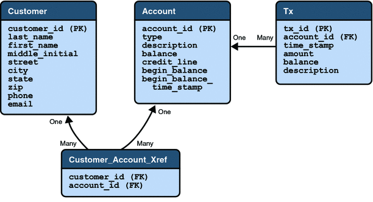

Enterprise Beans
Let’s take a closer look at the access paths between the clients, enterprise beans, and database tables. The end-user clients (web and application clients) access only the session beans. Within the enterprise bean tier, the session beans use Java Persistence entities. On the back end of the application, the entities access the database tables that store the entity states.
Note - The source code for these enterprise beans is in the tut-install/javaeetutorial5/examples/dukesbank/src/com/sun/ebank/ejb/ directory.
Session Beans
The Duke’s Bank application has three session beans: AccountControllerBean, CustomerControllerBean, and TxControllerBean. (Tx stands for a business transaction, such as transferring funds.) These session beans provide a client’s view of the application’s business logic. Hidden from the clients are the server-side routines that implement the business logic, access databases, manage relationships, and perform error checking.
The AccountControllerBean Session Bean
The business methods of the AccountControllerBean session bean perform tasks that fall into the following categories: creating and removing entities, managing the account-customer relationship, and getting the account information.
The following methods create and remove entities:
createAccount
removeAccount
These methods of the AccountControllerBean session bean call the create and remove methods of the Account entity. The createAccount and removeAccount methods throw application exceptions to indicate invalid method arguments. The createAccount method throws an IllegalAccountTypeException if the type argument is neither Checking, Savings, Credit, nor Money Market. The createAccount method also looks up the specified customer exists by invoking the EntityManager.find method. If the result of this verification is null, the createAccount method throws a CustomerNotFoundException.
The following methods manage the account-customer relationship:
addCustomerToAccount
removeCustomerFromAccount
The Account and Customer entities have a many-to-many relationship. A bank account can be jointly held by more than one customer, and a customer can have multiple accounts.
In the Duke’s Bank application, the addCustomerToAccount and removeCustomerFromAccount methods of the AccountControllerBean session bean manage the account-customer relationship. The addCustomerToAccount method, for example, starts by verifying that the customer exists. To create the relationship, the addCustomerToAccount method first looks up the Customer and Account entities using the EntityManager.find method, then it calls the Account.addCustomer method to associate the customer with the account.
The following methods get the account information:
getAccountsOfCustomer
getDetails
The AccountControllerBean session bean has two get methods. The getAccountsOfCustomer method returns all of the accounts of a given customer by invoking the getAccounts method of the Account entity. Instead of implementing a get method for every instance variable, the AccountControllerBean has a getDetails method that returns an object (AccountDetails) that encapsulates the entire state of an Account entity. Because it can invoke a single method to retrieve the entire state, the client avoids the overhead associated with multiple remote calls.
The CustomerControllerBean Session Bean
A client creates a Customer entity by invoking the createCustomer method of the CustomerControllerBean session bean. To remove a customer, the client calls the removeCustomer method, which invokes the EntityManager.remove method on the Customer instance.
The CustomerControllerBean session bean has two methods that return multiple customers: getCustomersOfAccount and getCustomersOfLastName. getCustomersOfAccount calls the getCustomers method of the Account entity. getCustomersOfLastName uses the Customer.FindByLastName named query to search the database for customers with a matching last name, which is a named parameter to the query.
The TxControllerBean Session Bean
The TxControllerBean session bean handles bank transactions. In addition to its get methods, getTxsOfAccount and getDetails, the TxControllerBean bean has several methods that change the balances of the bank accounts:
withdraw
deposit
makeCharge
makePayment
transferFunds
These methods access an Account entity to verify the account type and to set the new balance. The withdraw and deposit methods are for standard accounts, whereas the makeCharge and makePayment methods are for accounts that include a line of credit. If the type method argument does not match the account, these methods throw an IllegalAccountTypeException. If a withdrawal were to result in a negative balance, the withdraw method throws an InsufficientFundsException. If a credit charge attempts to exceed the account’s credit line, the makeCharge method throws an InsufficientCreditException.
The transferFunds method also checks the account type and new balance; if necessary, it throws the same exceptions as the withdraw and makeCharge methods. The transferFunds method subtracts from the balance of one Account instance and adds the same amount to another instance. Both of these steps must complete to ensure data integrity. If either step fails, the entire operation is rolled back and the balances remain unchanged. The transferFunds method, like all methods in session beans that use container-managed transaction demarcation, has an implicit Required transaction attribute. That is, you don’t need to explicitly decorate the method with a @TransactionAttribute annotation.
Java Persistence Entities
For each business entity represented in our simple bank, the Duke’s Bank application has a matching Java Persistence API entity:
Account
Customer
Tx
The purpose of these entities is to provide an object view of these database tables: bank_account, bank_customer, and bank_tx. For each column in a table, the corresponding entity has an instance variable. Because they use the Java Persistence API, the entities contain no SQL statements that access the tables. The enterprise bean container manages all data in the underlying data source, including adding, updating, and deleting data from the database tables.
Unlike the session beans, the entities do not validate method parameters. The session beans check the parameters and throw the application exceptions, such as CustomerNotInAccountException and IllegalAccountTypeException. Consequently, if some other application were to include these entities, its session beans would also have to validate the method parameters. Validation code was not added to the entity’s methods, in order to keep the business logic separate from the entity data.
Helper Classes
The EJB JAR files include several helper classes that are used by the enterprise beans. The source code for these classes is in the following directory:
tut-install/javaeetutorial5/examples/dukesbank/dukesbank-ejb/src/java/com/sun/tutorial/ javaee/dukesbank/util/
Table 37-1 briefly describes the helper classes.
Table 37-1 Helper Classes for the Application’s Enterprise Beans
Class Name |
Description |
|---|---|
AccountDetails |
Encapsulates the state of an Account instance. Returned by the getDetails method of AccountControllerBean. |
CustomerDetails |
Encapsulates the state of a Customer instance. Returned by the getDetails method of CustomerControllerBean. |
Debug |
Has simple methods for printing a debugging message from an enterprise bean. These messages appear on the standard output of the Application Server when it’s run with the --verbose option and in the server log. |
DomainUtil |
Contains validation methods: getAccountTypes, checkAccountType, and isCreditAccount. |
TxDetails |
Encapsulates the state of a Tx instance. Returned by the getDetails method of TxControllerBean. |
Database Tables
A database table of the Duke’s Bank application can be categorized by its purpose: representing business entities.
Tables Representing Business Entities
Figure 37-2 shows the relationships between the database tables. The bank_customer and bank_account tables have a many-to-many relationship: A customer can have several bank accounts, and each account can be owned by more than one customer. This many-to-many relationship is implemented by the cross–reference table named bank_customer_account_xref. The tables named bank_account and bank_tx have a one-to-many relationship: A bank account can have many transactions, but each transaction refers to a single account.
Figure 37-2 Database Tables
Figure 37-2 uses several abbreviations. PK stands for primary key, the value that uniquely identifies a row in a table. FK is an abbreviation for foreign key, which is the primary key of the related table. Tx is short for transaction, such as a deposit or withdrawal.
Protecting the Enterprise Beans
In the Java EE platform, you protect an enterprise bean by specifying the security roles that can access its methods. In the Duke’s Bank application, you define two roles, bankCustomer and bankAdmin, because two categories of operations are defined by the enterprise beans.
A user in the bankAdmin role will be allowed to perform administrative functions: creating or removing an account, adding a customer to or removing a customer from an account, setting a credit line, and setting an initial balance. A user in the bankCustomer role will be allowed to deposit, withdraw, and transfer funds, make charges and payments, and list the account’s transactions. Notice that there is no overlap in functions that users in either role can perform.
The system restricts access to these functions to the appropriate role by setting method permissions on selected methods of the CustomerControllerBean, AccountControllerBean, and TxControllerBean enterprise beans. For example, by allowing only users in the bankAdmin role to access the createAccount method in the AccountControllerBean enterprise bean, you deny users in the bankCustomer role (or any other role) permission to create bank accounts.